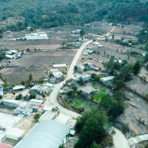
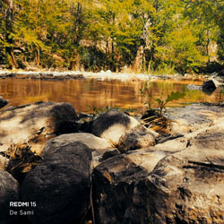
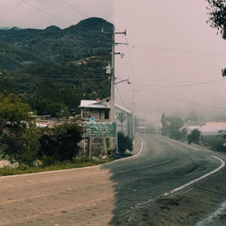

| PRINCIPAL HISTORIA CURIOSIDADES UBICACION CONTACTO PÁGINA EN MIXTECO |
 |
OASIS PLANO
Un "oasis plano" en plena sierra:La mayor curiosidad es su propia geografía. La Sierra Mixteca es famosa por sus caminos llenos de curvas, barrancas y montañas empinadas. Sin embargo, al llegar a San Pedro, el paisaje se abre de golpe en una llanura enorme y plana. Para los viajeros y transportistas de la región, este lugar es como un respiro natural en medio de tanta montaña. |
El río que aparece y desaparece
Debido a que el pueblo está asentado sobre una gran llanura rodeada de montañas, el comportamiento del agua es muy curioso. Durante la época de secas, el arroyo parece desaparecer o reducirse a un hilo de agua subterránea. Sin embargo, en la temporada de lluvias, toda el agua que baja de los cerros boscosos inunda los canales tradicionales, transformando el llano seco en un paisaje verde y lleno de vida de la noche a la mañana. |
 |
 |
El clima
El clima de los dos mil metros: Al estar casi a 2,000 metros de altitud, el clima en el llano es sumamente cambiante. En un mismo día puedes pasar de un sol brillante que calienta toda la planicie, a quedar completamente cubierto por una densa neblina que baja de los cerros boscosos, transformando el paisaje por completo en cuestión de minutos. |
|